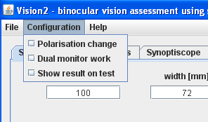
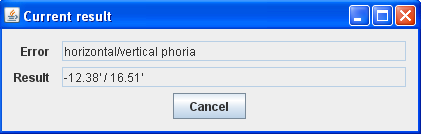

Menu "Configuration"
Picture 1 shows view of "Configuration" menu. It contains following options:
- Polarisation change: Marking this option cause switch between all element displayed for left and right eyes. Equals with pressing key "P" during test presenting.
- Dual monitor work: Marking this option cause activating dual-monitor mode. When in dual-monitor work main window don't disapear during test showing and additional window present current resutl (as shown on picture 2). After activating dual-monitor work you have to drag main window on second monitor.
- Show result on test: Marking this option cause showing current test result on upper-left corner of the screen. Equals with pressing space key during test presenting.

Picture 1. Menu "Configuration"

Picture 2. Presentation of current examination result in dual-monitor work mode.